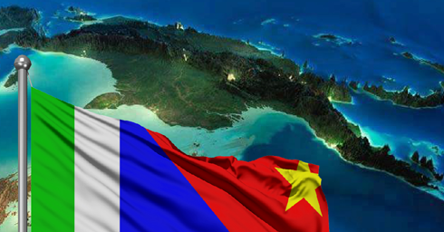

PROVINCIAL PROFILE

Milne Bay is a maritime province with a population of over 276,000 people. The province has significant economic potential in agriculture, tourism, and fisheries.
Geography & Demographics
Maps, population data, and key statistics.
Milne Bay Province, located in the southeastern region of Papua New Guinea, consists of four districts and more than 600 islands, of which approximately 160 are inhabited. The total land area is about 14,000 square kilometers, with a vast maritime zone offering extensive economic opportunities.
- Population: Over 276,000 people (based on recent estimates).
- Ethnic Diversity: The province is home to several indigenous language groups, reflecting a rich cultural heritage.
- Urban & Rural Distribution: The capital, Alotau, is the main urban center, while most of the population resides in rural and island communities.
Administrative Divisions
Districts, LLGs, and governance structure.
The province is divided into four districts, each with its own Local Level Governments (LLGs) to facilitate governance and development.
- Alotau District: Includes Alotau town, the commercial and administrative hub.
- Esa’ala District: Comprises islands such as Goodenough, Fergusson, and Normanby, with a strong focus on fishing and tourism.
- Kiriwina-Goodenough District: Home to the Trobriand Islands, known for their unique culture and yam-based economy.
- Samarai-Murua District: Covers the Louisiade Archipelago, a region with high marine biodiversity and potential for eco-tourism and fisheries.
Each district operates through LLGs, which are responsible for service delivery, economic development, and local governance.
Comparative Economic Advantage
Economic potential in oil palm, fisheries, tourism, and forestry.
Milne Bay Province has a diverse economy, with significant potential in agriculture, fisheries, tourism, and forestry.
- Oil Palm: The province has suitable land for oil palm expansion, with growing investment interest in sustainable palm oil production.
- Fisheries: Milne Bay’s extensive maritime area provides opportunities for tuna fishing, aquaculture, and marine resource development. The province is a key player in PNG’s fishing industry.
- Tourism: With pristine islands, rich marine biodiversity, and cultural heritage, tourism is a high-potential industry. Key attractions include the Trobriand Islands, Samarai Island, and diving hotspots such as the Coral Triangle.
- Forestry: The province has valuable timber resources, though sustainable forestry management is needed to balance economic benefits with environmental conservation.
These economic strengths make Milne Bay a strategic hub for investment and sustainable development, aligning with national and regional growth objectives.
Contact

Email: milnbayprovgov@outlook.com | Phone: +675 7273 9000 | Address: Milne Bay Provincial Government, Alotau, Papua New Guinea.